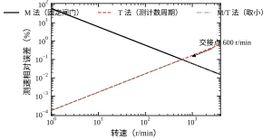
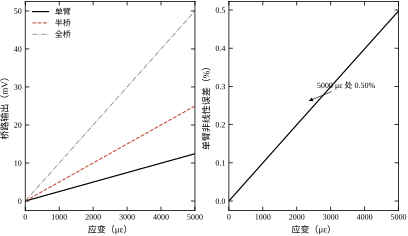
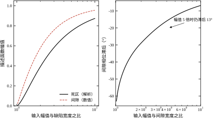
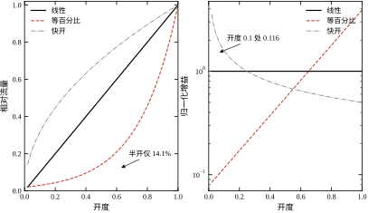
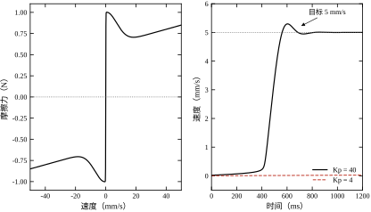

一台直线平台做位置阶跃，目标 10 mm，实际停在 9.982 mm，反复微调后停在 9.979 mm 到 9.985 mm 之间来回跳。工程师的第一反应是调 PID：加大比例增益，跳得更厉害；加积分，超调变大；加滤波，响应变慢。调了两天，参数换了几十组，问题还在。
真正的原因可能在两端：编码器每转 2500 线、四倍频后每转 10000 计数，丝杠导程 5 mm，一个计数对应 0.5 \mum，分辨率足够；但联轴器有 0.02° 的回差，折算到直线是 2.8 \mum；导轨的静摩擦让最后 10 \mum 走不动。控制器再好，也只能在传感器告诉它的那个数上做决定；执行器再听话，也只能在它物理上能到的范围内动作。 两端的不确定性，不会因为环路带宽提高而消失，只会被更快地放大成振荡。
这一章讲的就是这两端：传感器怎么把物理量变成数字，执行器怎么把数字变成物理量，以及这个转换过程中哪些误差是原理性的、哪些是可以通过标定消除的。
以测力为例，一条完整的信号链有六段：
执行器方向反过来：数字指令→DAC 或 PWM→功率放大→电机或阀→机械运动，中间还要经过死区、回差、饱和、摩擦四道关卡。传感器链的每一段都可能引入噪声与偏置，执行器链的每一段都可能引入非线性。 控制工程师不需要会设计应变片，但必须知道这条链上每一段的量级，否则无法判断“这个误差该不该管”。
本章覆盖工程中最常见的五类传感器与三类执行器，见表 12-1。
表 12-1 常见传感器与执行器的分类
| 类别 | 典型器件 | 输出形式 | 关键指标 | 常见问题 |
|---|---|---|---|---|
| 位置/角度 | 增量编码器、绝对编码器、旋变 | 脉冲、串行码、正余弦 | 分辨率、重复性 | 丢脉冲、零位漂移 |
| 速度 | 测速发电机、编码器差分 | 模拟电压、计数 | 纹波、延迟 | 低速量化噪声 |
| 力/力矩 | 应变式、压电式 | 毫伏差分 | 灵敏度、非线性 | 温漂、蠕变 |
| 接近/限位 | 霍尔、电感、光电 | 开关量 | 重复精度 | 抖动、迟滞 |
| 温度/压力 | 热电偶、RTD、压阻 | 毫伏、电阻 | 精度、响应时间 | 冷端补偿、非线性 |
| 电动执行器 | 直流/步进/伺服电机 | 转矩、转速 | 转矩密度、带宽 | 死区、饱和、摩擦 |
| 液压/气动 | 比例阀、伺服阀 | 流量、压力 | 响应、刚度 | 死区、滞环、非线性流量 |
| 阀门 | 调节阀、球阀、蝶阀 | 开度→流量 | 可调比、流量特性 | 回差、摩擦、闪蒸 |
表 12-1 的第五列比第四列更重要。选型时看的指标决定它能不能用，第五列的缺陷决定它好不好用。 一个 24 位 ADC 的分辨率再高，若前端放大器的失调漂移是每摄氏度几十微伏，温升 20 ℃ 就把低 8 位全部吃掉。
拿到一套“传感器 + 执行器”的参数，在写控制代码之前，有六个问题必须能算出数来：
这六个问题对应 §12.6 的六组实验，也是 §12.5 选型清单的来源。
本章的核心是：传感器与执行器的每一个非理想特性，最终都会折算成闭环里的一个等效增益、一个相位滞后或一个噪声底，控制器设计必须把这些折算量算进去，而不是假设它们是理想的。
路线是：§12.2 建立传感器与执行器的数学描述，包括量化、电桥、死区、回差、饱和、流量特性；§12.3 推导这些特性对闭环的影响，重点是量化噪声、测速误差、描述函数；§12.4 讲离散实现，包括 ADC 配置、测速算法、补偿策略；§12.5 讲选型与适用边界；§12.6 用六组实验把前面的解析式全部核对一遍；§12.7 收束。
与相邻章的分工：本章只讲“器件与信号”，不讲控制算法。PID 整定见第 44 章与第 106 章，MPC 见第 58 章与第 80 章，Smith 预估见第 47 章与第 107 章。滤波器的设计细节见第 14 章，测量数据处理与不确定度见第 13 章。
第一个错误直觉：分辨率越高，控制越准。 分辨率只决定“能不能看见变化”，不决定“看得准不准”。2500 线编码器四倍频后角分辨率 0.036°，对应 5 mm 导程的直线分辨率 0.5 \mum；但若联轴器回差 0.02°、丝杠螺距误差 10 \mum/300 mm，实际定位精度由后两者决定，把编码器换成 5000 线也不会改善。分辨率是必要不充分条件，精度取决于最差的那一环。
第二个错误直觉：死区可以靠加积分消掉。 积分能消掉稳态误差，前提是系统还能动。死区宽度 d 意味着控制器输出在 [-d,d] 内执行器不响应，积分要积累到超过 d 才有效；这段时间里系统是开环的，积分饱和（wind-up）、超调、极限环都从这里来。死区能补偿，但不能“消掉”——补偿本身依赖对 d 的准确估计，估计误差仍留在环里。
第三个错误直觉：传感器带宽越高越好。 带宽高的传感器把高频噪声一起放进来，ADC 前的抗混叠滤波器又必须保留足够带宽，结果是噪声底抬高。一个 10 kHz 带宽的力传感器配 1 kHz 采样，混叠会把 1 kHz 以上的噪声折回基带；正确做法是按被控量带宽选传感器，再用模拟滤波把带外噪声压掉。带宽要匹配，不是越高越好。
任何传感器，在一个有限的频带内，都可以写成一阶仿射加噪声：
y(t)=Kx(t)+b+n(t) \tag{12-1}
其中 K 是灵敏度（输出单位每输入单位），b 是零点偏置，n(t) 是噪声。这个式子看起来过于简单，但它已经把传感器的全部静态误差包含进去了：K 不准是增益误差，b 不准是零点误差，n 是随机误差。动态部分再把 K 换成传递函数 G(s)，通常是一阶或二阶低通。
工程上描述一个传感器，只看六个指标，见表 12-2。
表 12-2 传感器的六个基本指标
| 指标 | 定义 | 单位 | 能否标定消除 |
|---|---|---|---|
| 量程 | 可测量的上下限之差 | 物理量单位 | — |
| 分辨率 | 能分辨的最小输入变化 | 物理量单位 | 否 |
| 重复性 | 同一输入多次测量的一致程度 | % FS 或物理量 | 否 |
| 线性度 | 实际曲线偏离拟合直线的程度 | % FS | 部分（多项式修正） |
| 迟滞 | 正反行程同一输入的输出差 | % FS | 部分（双向标定） |
| 带宽 | 幅值衰减 3 dB 对应的频率 | Hz | 否 |
分辨率与精度是两件事。 分辨率由量化或噪声底决定，精度由非线性、迟滞、重复性共同决定。一个 24 位 ADC 的分辨率是 20/2^{24}=1.19\ \muV，但若前端放大器的失调漂移是 20\ \muV/℃，低 14 位在温升 1 ℃ 后就不可信。报指标时必须分清是分辨率还是精度，两者相差几个数量级是常态。
量程与分辨率的关系由位数决定：
\Delta=\frac{\mathrm{FS}}{2^{N}} \tag{12-2}
\mathrm{FS} 是满量程跨度，N 是位数。12 位、\pm10 V 量程对应的 LSB 是 20/4096=4.883 mV；同样 12 位、\pm1 V 量程的 LSB 是 0.488 mV。量程选大了，分辨率就浪费了；选小了，信号削顶。这是 ADC 配置里第一个要做的折中。
增量式编码器输出 A、B 两路正交脉冲和一个每转一次的 Z 脉冲。A、B 相位差 90°，通过判断哪一路超前可以知道转向；对两路的上跳沿与下跳沿都计数，就是四倍频。
每转计数与角分辨率是
N_{\mathrm{cpr}}=N_{\mathrm{line}}M,\qquad \Delta\theta=\frac{2\pi}{N_{\mathrm{line}}M} \tag{12-3}
本章取 N_{\mathrm{line}}=2500、M=4，得 N_{\mathrm{cpr}}=10000，\Delta\theta=6.283185\times10^{-4} rad，即 0.036°。折算到 5 mm 导程的丝杠，一个计数对应 0.5 \mum 的直线位移。
量化误差在 \pm\Delta\theta/2 内均匀分布，其均方根为
\sigma_q=\frac{\Delta\theta}{\sqrt{12}} \tag{12-4}
代入 \Delta\theta=6.283\times10^{-4} rad，得 \sigma_q=1.814\times10^{-4} rad。这个数只取决于编码器与倍频方式，与转速无关；它构成位置测量的噪声底，任何滤波都无法消除，只能平均。
测速是把位置对时间差分，有两种基本做法。M 法固定闸门时间 T_g，数闸门内的计数 \Delta N：
\omega=\frac{2\pi}{N_{\mathrm{cpr}}}\frac{\Delta N}{T_g} \tag{12-5}
T 法固定计数，测一个计数周期内的时钟数 n_c：
\omega=\frac{2\pi}{N_{\mathrm{cpr}}}\frac{1}{n_cT_{\mathrm{clk}}} \tag{12-6}
M 法的量化误差是 \pm1 个计数，相对误差 1/(\Delta N)，转速越低越差；T 法的量化误差是 \pm1 个时钟，相对误差 1/n_c，转速越高越差。本章 100 MHz 时钟、10 ms 闸门，两种方法的误差在 600 r/min 处相等，都是 0.1%——这个交接点是 §12.3.2 的主题。
增量式的三个工程弱点必须提前知道。第一，断电丢零位：上电时不知道自己在哪，必须先找 Z 脉冲或撞限位回零，这段动作在设备启动流程里占时间，也占行程。第二，丢脉冲不可恢复：干扰、超速、线缆接触不良都可能让计数器多计或少计，误差一旦产生就永久保留，直到下一次回零才被清除。第三，方向判据依赖 A、B 的相位关系：两路信号若因线缆延迟不等而错位，高速时会判错方向，表现为“位置突然跳变一个计数”。
绝对式编码器把这三个问题一次解决：每个位置有唯一编码，上电即知绝对位置，不需要回零；通信帧带 CRC，误码可被检出并可重传；角度由码盘图案直接读出，不依赖累计。代价是码盘更复杂、线缆更多（SSI 需时钟与数据两对差分线，BiSS 与 EnDat 类似）、单圈分辨率与码盘直径直接相关。
单圈与多圈的区别在于“转了几圈”要不要记住。单圈绝对式只编码 0 到 360°，多圈靠齿轮组或电池计圈，断电后仍知道总圈数。多圈的信息一旦丢失（电池耗尽、齿轮打滑），恢复代价比增量式回零更大，所以多圈编码器通常还要配一个机械零点标记作为最后的兜底。
选型的判据不是“绝对式更先进”，而是三条：是否需要断电保位、行程是否超过一圈、是否允许启动回零动作。三条里有一条为“是”，就应当选绝对式；三条都为“否”，增量式的成本优势是压倒性的。
还有一条容易被忽略的差别：增量式的错误是“静默”的，绝对式的错误是“可检出”的。 增量式丢一个脉冲，控制器不会报警，只会安静地偏 0.5 μm，直到产品尺寸超差才被发现；绝对式的 CRC 校验失败会立刻报错。可检测的错误比不可检测的错误安全，这是绝对式在安全相关场合越来越普遍的根本原因，与分辨率无关。
旋变（resolver）是另一种角度传感器。定子上两组正交绕组，转子上一个励磁绕组，输出两路包络为正余弦的调幅信号：
u_s=U_m\sin\theta_e\sin\omega_ct,\qquad u_c=U_m\cos\theta_e\sin\omega_ct \tag{12-7}
解调后取比值再求反正切，得 \theta_e=\arctan(u_s/u_c)。旋变的优点是耐高温、抗振动、无光学污染问题，适合电机内置；缺点是解算需要专用芯片或 FPGA，成本高。
解算的典型做法是跟踪型数字转换（RDC）：内部产生一个估计角 \hat\theta，用 \sin(\theta-\hat\theta)\approx\theta-\hat\theta 做鉴相，经 PI 环把误差压到零，环的输出就是角度，环的积分项就是转速。激励频率通常取 10 kHz，跟踪环带宽取激励频率的十分之一左右。这意味着旋变天然带一个“转速输出”，不需要再做差分，这是它相对编码器的一个隐性优势。
旋变的精度指标用角分表示：典型 1 到 10 角分，即 0.017° 到 0.17°。本章的 2500 线编码器四倍频后是 0.036°，两者在同一量级，所以“旋变精度低”的说法只对低端型号成立。旋变的真正短板是解算延迟与成本，不是分辨率。
霍尔传感器更简单：三路开关量，按电角度 120° 分布，组合出六个扇区，每个扇区 60° 电角度。它只能给出“转子在哪个扇区”，分辨率 60° 电角度，用于无刷电机的六步换向足够，用于精密位置控制远远不够。霍尔的作用是“知道往哪边推”，不是“知道推了多少”。
60° 电角度折算到机械角要除以极对数。四对极电机的一个扇区只有 15° 机械角；换向角误差 15° 时，该相的转矩按 \cos15^\circ=0.966 打折，转矩脉动在 3.4% 量级。这就是“霍尔换向的电机低速有轻微抖动”的定量来源：抖动的幅值由扇区宽度与极对数共同决定，而不是由控制器决定。
工程上常见的组合是：霍尔负责上电时判断初始扇区，编码器负责运行中的精密测角，两者在低速与高速之间切换。这套组合的切换逻辑与观测器设计见第 62 章，本章只讲器件本身的量级。
应变片粘贴在弹性体上，受力后长度变化，电阻随之变化：
\frac{\Delta R}{R}=G_F\varepsilon \tag{12-8}
金属箔式应变片的 G_F 约 2.0，半导体应变片可达 100 以上但温漂大。本章取 G_F=2.0、应变 1000\ \mu\varepsilon，得 \Delta R/R=2.0\times10^{-3}；350 \Omega 的应变片对应 \Delta R=700 mΩ。
电阻变化要变成电压，靠惠斯通电桥：
V_o=V_{\mathrm{ex}}\left(\frac{R_1}{R_1+R_2}-\frac{R_3}{R_3+R_4}\right) \tag{12-9}
四臂中只有 R_1 变化（单臂）时，R_1=R+\Delta R、其余为 R，代入得
V_o=V_{\mathrm{ex}}\frac{\Delta R}{2\left(2R+\Delta R\right)}\approx\frac{V_{\mathrm{ex}}}{4}\frac{\Delta R}{R}\left(1-\frac{\Delta R}{2R}\right) \tag{12-10}
本章参数下 V_o=2.4975 mV，线性近似值 2.5000 mV，非线性 0.0999%。半桥（R_1 增、R_2 减）输出 5.0000 mV，全桥（四臂全差动）输出 10.0000 mV，两者在理想对称条件下严格线性。全桥不只是灵敏度高 4 倍，还把非线性项消掉了，这是它成为力传感器标准配置的原因。
10 mV 的信号送进 12 位、\pm10 V 的 ADC，只占 10/4.883=2.05 个 LSB，完全不可用；必须放大。本章取 200 倍，放大后 2000 mV，占 409.6 个 LSB，约 8.7 位有效分辨率。放大倍数不是随便取的，要按“满量程输出占 ADC 满量程的 80%–90%”反算。
力传感器的安装刚度经常被忽略，但它决定可用带宽。传感器、支架与负载构成一个弹簧—质量系统，固有频率是 \omega_n=\sqrt{k/m}。设负载 0.5 kg、支架刚度 10^6 N/m，得 \omega_n=1414 rad/s，即 225 Hz；若支架偷工减料，刚度降到 10^5 N/m，固有频率掉到 71 Hz。
这个数与环路带宽对照才有意义。速度环 20 Hz 时，225 Hz 在 11 倍之外，谐振对相位的影响很小；71 Hz 只有 3.5 倍，谐振峰的相位陡降会直接吃掉裕度，表现为“增益一提就啸叫，频率恰好 71 Hz 左右”。力传感器测的是力，但机械上它同时是一个加速度计：支架振动、电缆抖动、甚至冷却水流过都会变成信号。
三条工程规则由此而来。第一，传感器尽量靠近被测点，缩短力流路径；第二，支架刚度按“固有频率不低于环路带宽 10 倍”设计，本章的 0.5 kg 负载需要 k\ge m(2\pi\times200)^2\approx7.9\times10^5 N/m；第三，传感器量程不要选得过大，量程越大弹性体越厚、刚度越高，但灵敏度越低，两者要平衡。选型时看的“额定载荷”背后其实是刚度，而刚度决定带宽。
从电桥到 ADC 之间还有两级：仪表放大器与抗混叠滤波器。
仪表放大器的三个关键参数是增益、共模抑制比与增益带宽积。增益决定信号能否占满 ADC 量程；共模抑制比决定工频干扰能否被压掉，典型 80–120 dB；增益带宽积决定放大后还剩多少带宽，200 倍增益配 1 MHz 增益带宽积，闭环带宽只有 5 kHz，若被控量需要 10 kHz 带宽，这一级就先把自己限死了。
共模抑制比要算成电压才有意义。电桥输出的 10 mV 是差模信号，而传感器线与地之间可能存在几十伏的共模电压——变频器开关、电机绕组、长线缆两端的地电位差都会产生。设共模电压 50 V：
CMRR 每降 20 dB，共模误差放大 10 倍。 10 mV 的信号链上，80 dB 的器件根本不能用，这就是仪表放大器不能图便宜的原因。分电阻搭的差动级，CMRR 主要取决于四只电阻的匹配，0.1% 的失配通常只能做到 80–90 dB；集成仪表放大器在片内激光修调，才容易做到 100 dB 以上。
共模电压特别高或地电位差特别大时，还要加隔离：光耦或磁隔离把信号链分成两段，共模电压加在隔离栅上，CMRR 由隔离器件的寄生电容决定，可达 120 dB 以上。代价是额外延迟（几微秒到几十微秒）与成本。隔离不是为了精度，是为了“不烧板子”；精度问题应当先在放大器与布线层面解决。
增益带宽积还要换算成建立时间。200 倍、1 MHz 增益带宽积对应闭环带宽 5 kHz，时间常数 \tau=1/(2\pi\times5000)=31.8\ \mu\mathrm{s}。ADC 要求建立到 0.5 个 LSB，即 2000 mV 中的 2.44 mV，相对精度 0.122%，需要 \ln(1/0.00122)=6.71 个时间常数，即 213 μs。采样周期 1 ms、采样保持占半拍 500 μs，213 μs 只留了 2.3 倍余量——若增益再提高一倍，τ 翻倍，建立时间就顶到采样窗口，读数开始出现“前一次采样的残留”。 这条约束决定了多通道复用时的最大扫描速率，也是 12.4.1 选择采样率的下限依据。
抗混叠滤波器的截止频率不能高于采样率的一半，工程上取 f_s/2.5 到 f_s/5，留出过渡带。一阶 RC 的截止频率是
f_c=\frac{1}{2\pi RC} \tag{12-11}
一阶滤波的滚降只有 20 dB/十倍频，若采样率 1 kHz、信号带宽 100 Hz，用一阶 RC 在 400 Hz 处截止，1 kHz 处的衰减只有 8 dB，混叠仍很严重；改用二阶或四阶，1 kHz 处可衰减 24–48 dB。抗混叠滤波器的阶数由“带外噪声有多大”与“允许多少混叠”共同决定，不能只看截止频率。
ADC 的量化噪声与位数之间是熟知的近似关系：
\mathrm{SNR}=6.02N+1.76\ \mathrm{dB} \tag{12-12}
12 位对应 74.0 dB。实际器件达不到这个数，用有效位数描述：
\mathrm{ENOB}=\frac{\mathrm{SINAD}-1.76}{6.02} \tag{12-13}
一个标称 12 位的 ADC，若实测 SINAD 只有 68 dB，ENOB 就是 11.0 位。数据手册里的 ENOB 是在特定输入频率、特定采样率下测的，输入频率升高，ENOB 通常下降。
过采样可以换取分辨率：采样率每提高 4 倍，噪声功率谱密度摊薄，SNR 提高 6 dB，等效多 1 位。本章 12 位 ADC 过采样 16 倍，等效 14 位，等效分辨率从 4.883 mV 降到 1.221 mV。过采样只对白噪声有效，若噪声是 50 Hz 工频或开关电源的固定频率，过采样帮不上忙，必须先滤波。
执行器的理想模型是 y=Ku，真实模型在 K 之外还有四道关卡。
死区：输入小于阈值时不响应。
u=\begin{cases}0, & |v|\le d\\ v-d\,\mathrm{sign}(v), & |v|>d\end{cases} \tag{12-14}
常见来源是阀的预紧、电机的静摩擦、齿轮的啮合间隙、液压阀的遮断。
回差（间隙）：输出不仅取决于当前输入，还取决于输入的历史方向。总间隙为 2h 时，输出被限制在 [v-h,v+h] 内，只有输入越过这个带才带动输出：
y[k]=\begin{cases}v[k]-h, & v[k]>y[k-1]+h\\ v[k]+h, & v[k]<y[k-1]-h\\ y[k-1], & \text{otherwise}\end{cases} \tag{12-15}
回差与死区的区别在于：死区对零附近的输入不响应，回差对整个行程的换向都不响应。死区影响小信号，回差影响换向。
饱和：输出被上下限截断。
u=\mathrm{sat}(v,u_{\min},u_{\max})=\min\left(\max(v,u_{\min}),u_{\max}\right) \tag{12-16}
饱和本身不是缺陷，是物理约束；问题在于控制器不知道已经饱和，积分继续累积，退出饱和时产生大超调。
摩擦：与速度相关的阻力，最常用的模型是 Stribeck 曲线：
F_f(v)=\left[F_c+\left(F_s-F_c\right)\mathrm{e}^{-(v/v_s)^2}\right]\mathrm{sign}(v)+\sigma v \tag{12-17}
F_s 是静摩擦，F_c 是库仑摩擦，v_s 是 Stribeck 速度，\sigma 是粘性系数。本章取 F_s=1.0 N、F_c=0.6 N、v_s=10 mm/s、\sigma=5 N·s/m。曲线在 |v|<v_s 段随速度增大而下降，形成负阻尼，这就是低速爬行的根源。
表 12-3 汇总四种非线性的量级与可补偿性。
表 12-3 执行器四种非线性的对比
| 非线性 | 典型量级 | 对闭环的影响 | 能否补偿 |
|---|---|---|---|
| 死区 | 满量程 1%–5% | 等效增益下降、稳态误差 | 可补偿，依赖估计精度 |
| 回差 | 满量程 0.5%–3% | 增益下降加相位滞后 | 部分补偿，反向时失效 |
| 饱和 | 由物理约束决定 | 积分饱和、大超调 | 抗饱和算法可缓解 |
| 摩擦 | 额定力的 5%–30% | 低速爬行、稳态误差 | 前馈可减小，不能消除 |
调节阀的开度 l\in[0,1] 与流量 q 的关系有三种标准特性。
线性特性：流量与开度成正比。
\frac{q}{q_{\max}}=l \tag{12-18}
等百分比特性：开度每增加 1%，流量增加当前值的固定百分比。
\frac{q}{q_{\max}}=R^{\,l-1} \tag{12-19}
R 是可调比，即最大流量与最小可控流量之比，典型 30–50。本章取 R=50。
快开特性：小开度时流量迅速上升，之后趋于饱和。
\frac{q}{q_{\max}}=\sqrt{l} \tag{12-20}
三种特性的增益（\mathrm{d}q/\mathrm{d}l）差别很大。线性阀增益恒为 1；等百分比阀的增益是 \ln R\cdot R^{l-1}，从开度 0.1 到 1.0 放大 33.81 倍；快开阀的增益从 1.5811 降到 0.5000，即 0.32 倍。阀门特性选择的核心是“让环路增益在全程尽量平坦”：泵与管路特性接近线性时选线性阀，管路压降占比大时选等百分比阀，开关型场合选快开阀。
本章符号汇总于表 12-4。同一符号在全章只表达一个含义，与后续章节冲突时以本书《术语与符号表》为准。
表 12-4 本章符号与单位
| 符号 | 含义 | 单位 |
|---|---|---|
| K | 灵敏度 | 输出单位/输入单位 |
| b | 零点偏置 | 输出单位 |
| \Delta | 分辨率（一个 LSB） | 输入单位 |
| N_{\mathrm{line}} | 编码器线数 | 线/转 |
| N_{\mathrm{cpr}} | 每转计数 | 计数/转 |
| T_g | 测速闸门时间 | s |
| f_s | 采样频率 | Hz |
| G_F | 应变片灵敏系数 | 无量纲 |
| \varepsilon | 应变 | 无量纲（με） |
| d | 死区半宽 | 归一化或物理量 |
| h | 回差半宽 | 归一化或物理量 |
| F_s,F_c | 静摩擦、库仑摩擦 | N |
| R | 阀门可调比 | 无量纲 |
量化把连续值映射到整数格点，误差 e=x-Q(x) 在 [-\Delta/2,\Delta/2] 内近似均匀分布。均匀分布的方差是
\sigma_q^2=\frac{\Delta^2}{12} \tag{12-21}
本章编码器的 \Delta\theta=6.283\times10^{-4} rad，代入得 \sigma_q=1.814\times10^{-4} rad；ADC 的 \Delta=4.883 mV，得 \sigma_q=1.410 mV。脚本打印的 1.409547 mV 与手算一致。
量化噪声的关键性质有三条。第一，它与信号无关：只要信号不在 LSB 上锁死，误差就是均匀分布的白噪声，功率只由 \Delta 决定。第二，它是宽带的：功率平均分布在 [0,f_s/2] 内，功率谱密度是 \sigma_q^2/(f_s/2)。第三，它对平均有效：M 次独立平均后噪声降到 1/\sqrt{M}，这就是过采样能换分辨率的原理。
第三条有一个前提：量化误差必须近似独立。若输入是缓慢变化的直流量，相邻采样落在同一个 LSB 内，误差高度相关，平均没有效果。工程上解决这个问题的办法是加抖动（dither）：在 ADC 前叠加一个幅度约 1 LSB 的白噪声，把相关性打散。抖动牺牲一点信噪比，换来量化误差的白化，在低速高精度测量里是常规手段。
M 法的相对误差是 1 除以闸门内的计数：
\varepsilon_M=\frac{1}{\Delta N}=\frac{2\pi}{\omega N_{\mathrm{cpr}}T_g} \tag{12-22}
T 法的相对误差是 1 除以一个计数周期内的时钟数：
\varepsilon_T=\frac{1}{n_c}=\frac{\omega N_{\mathrm{cpr}}T_{\mathrm{clk}}}{2\pi} \tag{12-23}
两式相乘等于 T_{\mathrm{clk}}/T_g，与转速无关。这说明两种方法的误差乘积是常数，一条随转速反比下降、一条正比上升，必然相交一次。令两式相等，得交接角频率
\omega_{\mathrm{cross}}=\frac{2\pi}{N_{\mathrm{cpr}}\sqrt{T_gT_{\mathrm{clk}}}} \tag{12-24}
代入 N_{\mathrm{cpr}}=10000、T_g=0.01 s、T_{\mathrm{clk}}=10 ns，得 \omega_{\mathrm{cross}}=62.83 rad/s，即 600 r/min；交接点误差 \sqrt{T_{\mathrm{clk}}/T_g}=10^{-3}，即 0.1%。
图 12-1 是三种方法在全速域的误差曲线。

M 法在 1 r/min 时误差 60%，T 法只有 0.0002%；M 法在 3000 r/min 时误差 0.02%，T 法升到 0.5%。低速用 T 法、高速用 M 法，交接点在 600 r/min，这就是 M/T 法（取两者较小值）的实用形式。工业伺服驱动器通常以 30–100 r/min 为界切换，切换点比理论交接点低，因为低速段对误差更敏感。
切换本身会带来问题：两种方法的噪声特性不同，切换瞬间速度估计会跳变，速度环会把这个跳变当成扰动。工程上的处理是加迟滞带（上切换点 700 r/min、下切换点 500 r/min）并对估计值做一阶低通，代价是引入相位滞后。测速滤波的带宽与速度环带宽之间必须留 5 倍以上差距，否则滤波器的相位滞后会吃掉速度环的裕度。
还有第四种做法，很多初学者会自然想到：直接用位置差分，即 \omega[k]=\left(x[k]-x[k-1]\right)/T_s。它在形式上就是 M 法，区别是闸门取一个控制周期。代价可以从量化噪声直接算出来。位置的量化标准差是扫描周期内的计数量化，折算到直线为 0.5/\sqrt{12}=0.1443\ \mu\mathrm{m}；差分是两个独立样本相减，方差相加，所以速度噪声是 \sigma_\omega=\sqrt{2}\sigma_x/T_s=1.414\times0.1443\ \mu\mathrm{m}/1\ \mathrm{ms}=204\ \mu\mathrm{m/s}，即 0.204 mm/s。
目标速度 5 mm/s 时，这个噪声是目标值的 4.1%，而且它落在整个频带里，不是低频漂移。峰峰值更直观：一个计数的差就是 0.5 μm/ms，即 0.5 mm/s，占目标值的 10%。
要用差分把噪声压到 0.1%（5 μm/s），采样周期必须拉长到 1.414\times0.1443\ \mu\mathrm{m}/5\ \mu\mathrm{m/s}=40.8 ms，对应带宽不到 4 Hz，速度环根本做不了 20 Hz。这就是工业驱动器宁可用硬件 T 法测速、也不用位置差分的原因：微分环节对高频噪声的增益随频率线性上升，差分把量化噪声整个抬起来，再滤波又把相位滞后加回去，两头都不划算。
结论可以写成一句话：位置差分只适合“速度要求不高、但必须省一个测速环节”的场合；只要速度环带宽超过 10 Hz，就应当用 M/T 法或编码器自带的测速输出。
把 (12-10) 除以 V_{\mathrm{ex}}\varepsilon，得单臂电桥的灵敏度：
S_{\mathrm{q}}=\frac{V_o}{V_{\mathrm{ex}}\varepsilon}\approx\frac{G_F}{4} \tag{12-25}
全桥四臂全差动时，四个 \Delta R 同号叠加，灵敏度提高到
S_{\mathrm{f}}=G_F \tag{12-26}
G_F=2.0 时，单臂灵敏度 0.5，全桥 2.0，正好 4 倍。脚本给出全桥与单臂的输出比 4.0040，略大于 4 是因为单臂被非线性压低了 0.0999%。
单臂的非线性来自分母里的 \Delta R：由 (12-10)，
\frac{V_o-V_{o,\mathrm{lin}}}{V_{o,\mathrm{lin}}}=-\frac{\Delta R}{2R}=-\frac{G_F\varepsilon}{2} \tag{12-27}
1000 με 时是 -0.1\%，5000 με 时是 -0.5\%。图 12-2 给出三条输出曲线与单臂非线性。

非线性看起来只有千分之一，为什么还要用全桥？因为应变式传感器的满量程应变常在 1000–3000 με，非线性 0.1%–0.3%，恰好与传感器本身的精度指标同量级。用单臂，非线性项无法与真实载荷区分；用全桥，这一项从原理上消失，标定只需两点。这是“用结构消除误差”而不是“用算法补偿误差”的典型例子。
电桥还有两个容易被忽略的性质。第一，桥压的稳定性直接进入输出：V_o 正比于 V_{\mathrm{ex}}，桥压波动 0.1%，输出就波动 0.1%。所以精密称重必须用恒压源或比率式 ADC（用桥压作参考）。第二，温度对四臂的影响在理想对称时相互抵消：四片应变片处于同一温度，\Delta R_T 相同，全桥输出不变。单臂没有这个性质，温漂会直接进入输出。
死区、回差、饱和都是非线性环节，不能直接写传递函数。分析它们在闭环里的作用，标准工具是描述函数：输入正弦 A\sin\omega t，取输出的基波分量与输入的比值，
N(A)=\frac{Y_1}{A}\mathrm{e}^{\mathrm{j}\varphi_1} \tag{12-28}
对死区，解析结果是
N_d(A)=\frac{2}{\pi}\left[\frac{\pi}{2}-\arcsin\frac{d}{A}-\frac{d}{A}\sqrt{1-\left(\frac{d}{A}\right)^2}\right],\qquad A>d \tag{12-29}
它只有一个实部，虚部为零，即死区只压低增益、不引入相位。A/d=1.05 时 N=0.0124，A/d=2 时 N=0.3910，A/d=10 时 N=0.8729。脚本用数值基波提取复核，五个点与解析式完全一致（0.0124/0.2191/0.3910/0.7471/0.8729），相位均为 0.000°。
回差（间隙）没有同样简洁的闭式，工程上直接数值求解。图 12-3 给出两者的幅值与回差的相位。

间隙的数值结果是：A/h=1.05 时幅值 0.0603、相位 -73.243^\circ；A/h=2 时 0.5927、-32.482^\circ；A/h=5 时 0.8815、-13.362^\circ；A/h=10 时 0.9549、-6.893^\circ。同样把幅值压到 0.88 附近，死区不滞后，间隙滞后 13°。 13° 在相位裕度只有 40° 的环里就是三分之一的裕度，这是间隙比死区更容易引起极限环的原因。
描述函数的用法是解极限环方程：
1+N(A)G(\mathrm{j}\omega)=0 \tag{12-30}
给定 G，找满足幅值条件 |N(A)G(\mathrm{j}\omega)|=1 与相位条件 \angle G(\mathrm{j}\omega)+\angle N(A)=-\pi 的 (A,\omega)。若解存在且稳定，系统就会在该幅值、该频率上持续振荡。描述函数只能预测极限环的存在与量级，不能给出精确波形；精确波形要靠 §12.6 的时域仿真。
饱和与死区、回差不同：它不是缺陷，是物理约束。问题出在控制器不知道约束已经生效。以速度环为例，积分器在饱和期间的累积量是
\Delta I=K_i\int_{t_1}^{t_2}e(t)\,\mathrm{d}t \tag{12-31}
本章实验六取 K_i=400、e=5 mm/s、饱和持续 0.5 s，累积量 400\times0.005\times0.5=1.0 N。推力限幅是 \pm3.0 N，这 1.0 N 的“虚假积分”要靠反向误差慢慢退掉；若退出时误差只有 1 mm/s，退掉需要 1.0/(400\times0.001)=2.5 s。这两秒半里，系统已经该停下却还在往前推，超调就是这么来的。
抗饱和的标准做法是回写：饱和时把积分器改成“只保留刚好到限幅”的值。
\dot{I}=\begin{cases}e, & |u|<u_{\max}\\ 0, & |u|\ge u_{\max}\ \text{and}\ e\cdot u>0\\ e, & \text{otherwise}\end{cases} \tag{12-32}
条件积分比无条件限幅好在：饱和且误差方向与输出同向时冻结积分，反向时立即放开。更彻底的做法是反计算（back-calculation）：把 u_{\mathrm{sat}}-u 乘一个跟踪增益反馈到积分器输入端，跟踪增益取 1/T_t，T_t 通常取积分时间的 0.5–2 倍。
抗饱和只能减小超调，不能消除饱和。 若执行器余量本身不足，任何算法都变不出力来；这时候要改的是选型，不是控制。
把阀门放进流量环，环路增益是控制器增益乘阀门增益。阀门增益随开度变化，环路增益就随工作点变化。
线性阀的增益恒定，环路增益在全程不变；等百分比阀的增益从开度 0.1 的 0.1157 升到开度 1.0 的 3.9120，变化 33.81 倍；快开阀从 1.5811 降到 0.5000，变化 0.32 倍，表 12-5。
表 12-5 三种阀门在不同开度的归一化增益
| 开度 | 线性 | 等百分比 | 快开 |
|---|---|---|---|
| 0.1 | 1.0000 | 0.1157 | 1.5811 |
| 0.3 | 1.0000 | 0.2530 | 0.9129 |
| 0.5 | 1.0000 | 0.5532 | 0.7071 |
| 0.7 | 1.0000 | 1.2098 | 0.5976 |
| 0.9 | 1.0000 | 2.6455 | 0.5270 |
| 1.0 | 1.0000 | 3.9120 | 0.5000 |
如果只看阀门，线性阀的环路增益最平坦，应当选线性阀。但工程上大量场合选等百分比，原因是阀门后面的被控对象不是线性的：换热器的换热量正比于流量，而流量与开度的关系又受管路压降影响；当阀门压降占总压降的比例随流量增大而下降时，阀门本身的等百分比特性恰好补偿了管路特性的饱和倾向，使“开度—换热量”的总增益接近平坦。
写成一句话：阀门特性的选择依据是“阀门 + 管路 + 负荷”的串联总增益，不是阀门单独的增益。 只按阀门样本曲线选型，是初学者的常见错误。
图 12-4 给出三条流量曲线与对应的增益。

从图 12-4 右图可以直接读出两个工程结论。第一，等百分比阀在小开度时增益极低，开度 0.1 处增益只有线性的 11.6%，若控制器按大开度整定，小开度时会显得“反应迟钝”，这是正常的，不是故障。第二，快开阀在 20% 开度以下就走完 45% 的流量，用于调节时几乎没有控制精度，只能当开关阀用。半开时等百分比阀只走 14.14% 的流量，这个数字常被误认为“阀坏了”。
把 (12-17) 对速度求导：
\frac{\mathrm{d}F_f}{\mathrm{d}v}=-2\frac{F_s-F_c}{v_s}\frac{v}{v_s}\mathrm{e}^{-(v/v_s)^2}+\sigma \tag{12-33}
第一项是负的，第二项是正的。负阻尼在 v=v_s/\sqrt{2} 处达到最大，最大值为
\left|\frac{\mathrm{d}F_f}{\mathrm{d}v}\right|_{\max}=\sqrt{\frac{2}{\mathrm{e}}}\,\frac{F_s-F_c}{v_s}-\sigma \tag{12-34}
代入本章参数 F_s-F_c=0.4 N、v_s=0.01 m/s、\sigma=5 N·s/m：\sqrt{2/\mathrm{e}}=0.8578，第一项 0.8578\times0.4/0.01=34.31 N·s/m，减去 5 得 29.31 N·s/m 的净负阻尼。
这个数就是低速稳定所需的最小控制阻尼。速度环的 K_p 单位是 N/(m/s)，数值上等于阻尼，所以 K_p 必须大于 29.31 N·s/m 才能压住 Stribeck 负阻尼。实验六取 K_p=40，比边界高 36%，5 mm/s 时速度峰峰值只有 0.0017 mm/s；取 K_p=4，远低于边界，速度掉到 0.0331 mm/s，稳态误差 99.3%。
注意低增益下的表现不是“振荡”，而是“推不动”：平均推力只有 0.3188 N，低于库仑摩擦 0.60 N，电机根本没有越过静摩擦门槛。负阻尼判据给出的是小信号稳定边界，实际系统先碰到哪一个限制（静摩擦门槛还是负阻尼振荡），取决于增益与摩擦参数的相对大小。 图 12-5 左边是 Stribeck 曲线，右边是两种增益下的速度响应。

工程上处理摩擦有三条路，代价依次升高：提高速度环增益（受噪声与带宽限制）、加摩擦前馈（需要摩擦模型与参数辨识）、改用高刚度执行器或静压导轨（从原理上消除接触摩擦）。先算 29.31 N·s/m 这个边界，再决定走哪条路——若所需增益已经在噪声允许范围之外，前馈才是唯一选择。
前面讨论的误差都有一个共同点：它们变化得快，可以靠滤波或平均压下去。温漂与蠕变相反，它们变化得慢，慢到滤波器会把它们当成“真实信号”保留下来。
应变片的温度误差有两个来源。一是灵敏系数的温度系数，金属箔式约 -0.02\%/\mathrm{K}；二是弹性体与应变片的热膨胀失配，产生“表观应变”。用自补偿片可以把后者压到 1 到 2 με/K 的量级。取 2 με/K、环境温度变化 20 K：
\Delta\varepsilon_{\mathrm{app}}=2\times20=40\ \mu\varepsilon \tag{12-35}
相对本章 1000 με 的额定应变，这是 4% 的满量程误差；折算成电压是 V_{\mathrm{ex}}G_F\Delta\varepsilon=5\times2.0\times40\times10^{-6}=400\ \mu\mathrm{V}，经 200 倍放大为 80 mV，即 16.4 个 LSB。4% 的满量程误差不可能靠滤波消除，因为它与被测力一样“慢”。
蠕变更慢。金属箔式应变片的典型指标是 0.02% FS/30 min，在本章 1000 με 上对应 0.2 με，看上去很小；但称重场合要连续工作 8 小时，误差会累积到 0.32% FS，而且卸载后还有零点残留。长期测量必须定时去皮或定期回零，这不是算法问题，是材料特性。
两条应对路径，顺序不能颠倒。首先是结构：选自补偿片、把桥路做成全桥（四片同时感受温度，失配相互抵消）、把弹性体与安装基座的热膨胀系数匹配。其次才是标定：在工作温度下取零点，把温度传感器读到值作为补偿变量。软件补偿能修掉一部分，但修不掉传感器内部的温度梯度——温度梯度产生的是“弯曲”，不是“伸长”，全桥也抵消不了。
应变片贴在结构上，桥路却在几米外的机柜里，中间必须走线。引线有电阻，而它和应变片串在同一个桥臂里，仪器分不开“应变引起的电阻变化”和“引线本身的电阻”。
以 350 Ω 应变片、单根引线 0.5 Ω 为例。两线制时一根桥臂上串两根引线，桥臂变成 351.0 Ω，相对偏差 0.2857%；按灵敏系数 2.0 折算，相当于 1428.6 με 的虚假应变——比本章 1000 με 的额定量程还大。换句话说，两线制接法的零点误差可以超过满量程。
四线制从原理上消除这项误差：两根线供激励电流，另两根线单独取电压，引线电阻只落在激励回路里，不进入测量桥臂，残余误差为零。三线制是折中，只能抵消一半，适合引线很短或精度要求不高的场合。
温度会把这个问题放大。铜的电阻温度系数是 0.393%/K，两个 0.5 Ω 的引线在 20 K 温差下共变化 0.0786 Ω，相对 350 Ω 是 0.02246%，折合 112 με——比应变片自补偿后的 40 με 表观应变还大。引线随环境温度变化，而应变片做了自补偿，两者的漂移方向还不一致，软件补偿很难同时压住。
还有一条容易被忽略：桥压 5 V、桥臂 350 Ω 时，桥臂电流 7.14 mA，应变片自热功率 17.9 mW。自热会让片体温度高于环境，形成缓慢的零点爬升，这也是 12.3.8 节说的“滤不掉的慢误差”。选桥压要在灵敏度与自热之间折中，不能只看输出大不大。
执行器一侧也有两项“不是传感器误差、却混进控制回路”的量：电流纹波与死区电压损失。
先看纹波。H 桥单极性调制时，电感电流的峰峰值为 \Delta I_{pp}=V_{dc}D(1-D)/(Lf_{sw})，在 D=0.5 时取最大值。取母线 48 V、电感 1 mH、开关频率 20 kHz，D=0.5 得 \Delta I_{pp}=48\times0.25/(10^{-3}\times2\times10^{4})=0.6 A；D=0.25 时 0.45 A，D=0.1 时 0.216 A。纹波在半占空比最严重，而半占空比恰好是电机中速运行的常用工作点。 对 5 A 额定的电机，0.6 A 是 12%，它不会让平均转矩出错，但会让电流环看到一个以开关频率为载频的三角波。
这个三角波怎么进控制器，取决于采样时刻。中心对齐调制时，计数器在周期中点触发 ADC，此刻电流正好穿过平均值，纹波不进入反馈；若在周期边沿触发，采样值偏离平均值最多 \Delta I_{pp}/2=0.3 A，对 5 A 是 6% 的假反馈。这就是“同步采样”三个字的全部含义——不是采样率够高，而是采样时刻与开关周期对齐。
再看死区。互补的两只开关之间必须留死区 t_d，否则直通烧桥。一个开关周期里有两个死区窗口，每窗都按电流方向把输出钳到相反的母线上，合计丢掉的伏秒为 2t_dV_{dc}，于是平均电压误差是 \Delta V=2t_df_{sw}V_{dc}。取 t_d=1\ \mu\mathrm{s}、20 kHz、48 V，得 \Delta V=1.92 V，占母线电压的 4.0%。
这个 1.92 V 在低占空比时是灾难。占空比 0.1 时指令输出 4.8 V，误差 1.92 V，相对误差 40%；占空比 0.9 时指令 43.2 V，同样是 1.92 V，相对误差只有 4.4%。更麻烦的是符号：电流方向翻转时，误差方向跟着翻转，于是在电流过零附近形成一段“电压推不动”的平台——它和 §12.3.4 的死区是同一种东西，只不过来源在功率级而不是机械间隙。把 t_d 缩到 0.5 μs，误差降到 0.96 V（2.0%），但直通风险上升，所以工程上很少靠缩短死区解决，而是按电流方向做补偿，或在低速段改用电流闭环。
ADC 配置有三个相互牵制的量：量程、前端增益、采样率。
量程与增益要一起定。设传感器满量程输出 V_{\mathrm{out}}，ADC 满量程 \mathrm{FS}，理想增益是
G_{\mathrm{opt}}=\frac{0.9\,\mathrm{FS}/2}{V_{\mathrm{out}}} \tag{12-36}
本章全桥满量程输出 10 mV、ADC 量程 \pm10 V，理想增益是 0.9\times10/0.01=900 倍，放大后 9 V，占 92% 量程。但 §12.2.4 只取了 200 倍，放大到 2 V，占 20% 量程。这不是笔误，而是两个工程考虑：过载余量与噪声。
力传感器常有 150%–200% 的过载能力，标称 10 mV 的满量程在实际工况下可能到 20 mV；若按 900 倍配置，一次过载就把 ADC 打饱和，恢复要几十毫秒。取 200 倍，20 mV 时输出 4 V，仍在 \pm10 V 内。代价是有效位数下降：200 倍时只用到 409.6 个 LSB，有效分辨率约 8.7 位；若确信不会过载，900 倍能用到 1843 个 LSB，约 10.8 位。
量程利用率与有效位数的关系是
\mathrm{ENOB}_{\mathrm{eff}}=N-\log_2\frac{\mathrm{FS}}{2V_{\mathrm{in}}} \tag{12-37}
本章 N=12、\mathrm{FS}=20 V、V_{\mathrm{in}}=2 V，得 12-\log_2 5=12-2.32=9.68 位。脚本给出 ±1 V 输入时剩 8.68 位，与这个式子一致（±1 V 对应 \log_2 10=3.32 的损失）。输入幅度每减半，损失 1 位，这条规律比记公式好用。
采样率的选择看两件事：信号带宽与抗混叠。经验规则是 f_s\ge10f_{\mathrm{sig}}，即每个信号周期至少 10 个采样点；若只要求幅值精度不要求相位精度，f_s\ge5f_{\mathrm{sig}} 也可接受。本章的速度环带宽按 20 Hz 设计，取 f_s=1 kHz，比值 50，足够。
采样率还受孔径抖动限制。ADC 的采样保持电路有几十皮秒到几纳秒的抖动，输入信号变化越快，抖动带来的电压误差越大：
\Delta V=\frac{\mathrm{d}V}{\mathrm{d}t}t_j \tag{12-38}
1 kHz、10 V 幅值的正弦，最大斜率 2\pi\times10^3\times10=6.28\times10^4 V/s；抖动 1 ns 时误差 62.8 \muV，相当于 0.013 个 LSB，可以忽略。若信号是 1 MHz、1 V 幅值，斜率 6.28\times10^6 V/s，同样抖动下误差 6.28 mV，超过 1 个 LSB，这时必须用更低抖动的时钟或降低输入频率。
多通道复用时，采样率还要被“建立时间”除一次。前端只有一套放大器，靠模拟开关轮流接到各通道，每次切换后放大器要重新建立。§12.2.5 算过，200 倍、1 MHz 增益带宽积时建立到 0.5 LSB 需要 213 μs。
若 8 通道、帧率 1 kHz，每通道分到的时间只有 1/(1000\times8)=125\ \mu\mathrm{s}，小于 213 μs，上一次采样的残留还没衰减完就进入下一次转换。残留比例是 \mathrm{e}^{-125/31.8}=\mathrm{e}^{-3.93}=2.0\%，即相邻通道之间出现 2% 的串扰——在一个 8 通道的力/温度混合系统里，这个量级足以让温度通道“看见”力通道的跳变。
三个修法，按代价排序。第一，换增益带宽积 2 MHz 的放大器：τ 减半到 15.9 μs，125 μs 内衰减到 \mathrm{e}^{-7.86}=0.039\%，串扰消失。第二，降低通道数或帧率，把窗口拉长到 500 μs 以上。第三，每通道配独立的放大器与采样保持，成本最高但彻底。“12 位、1 kSPS、8 通道”这三个指标不能同时成立，必须先算建立时间再看能不能兑现。
测速在微控制器上有两种实现：定时器捕获与固定周期查询。
捕获方式对应 T 法：编码器脉冲触发捕获，记录定时器计数值，两次捕获之差就是一个计数周期内的时钟数。实现要点有三个：定时器要够宽（32 位、100 MHz 时约 43 s 溢出一次），溢出要处理，捕获中断要短（只存时间戳，计算放到主循环）。
固定周期查询对应 M 法：每个控制周期读一次计数值，与前一次相减。实现要点是读计数器时要防止“读高字节时低字节进位”，标准做法是连读两次直到一致。
两种方式得到的原始速度都带量化噪声，必须滤波。最常用的是离散一阶低通：
y[k]=\alpha y[k-1]+\left(1-\alpha\right)x[k],\qquad \alpha=\mathrm{e}^{-2\pi f_cT_s} \tag{12-39}
它在频率 f 处的相位滞后是
\varphi=-\arctan\frac{f}{f_c} \tag{12-40}
本章取 f_c=200 Hz、T_s=1 ms，\alpha=0.2846。速度环带宽 20 Hz 处，相位滞后 -5.7^\circ；若把 f_c 降到 50 Hz，同样 20 Hz 处滞后 -21.8^\circ，速度环裕度立刻少 16°。滤波器的截止频率不是越高越好，也不是越低越好，要按“噪声抑制”与“相位滞后”两头算。
更精细的做法是零相位滤波或卡尔曼滤波：前者离线可用、在线不可用，后者需要噪声模型。工程上 90% 的场合一阶低通够用，剩下 10% 用二阶或陷波器处理特定频率的机械共振。
死区的逆模型很简单：控制器算出期望输出 v，实际下发 u 时加上死区宽度：
u=\begin{cases}v+d, & v>0\\ 0, & v=0\\ v-d, & v<0\end{cases} \tag{12-41}
这个补偿在 |v| 远离零时有效，在零附近会抖振：v 在零上下微小变化，u 在 \pm d 之间跳变，执行器跟着来回动。工程上的处理是加一个小的滞环：|v|<\delta 时保持上一次的补偿方向，\delta 取 0.1d 到 0.3d。
补偿的精度取决于 d 的估计。若真实死区是 d、估计值是 \hat d，残余死区是 |d-\hat d|。本章 d=0.05（归一化），估计偏差 20% 时残余 0.01，相当于原死区的 20%；描述函数从 0.3910 变成约 0.55（按 A/d 变化折算），环路增益随之变化，原本按补偿后整定的参数就要重调。补偿不是一劳永逸的，死区随磨损、温度、负载变化，补偿量也要能在线辨识。
回差的补偿比死区难。死区的逆模型是静态的，回差的逆模型是状态相关的：要知道当前是正向还是反向行程，还要知道间隙的“已消除量”。常见做法是维护一个间隙状态变量 s，正向行程时 s 累加，反向时先走完 2h 才开始带动负载：
u=\begin{cases}v+h, & \text{forward stroke}\\ v-h, & \text{backward stroke}\end{cases} \tag{12-42}
方向判断依赖速度指令的符号，而速度指令在零附近会抖，导致补偿方向频繁切换、输出抖动。回差补偿在换向瞬间最不可靠，这也是为什么高精度场合宁可用双编码器（负载端再装一个）也不愿只靠算法补偿。 负载端编码器把间隙“测量”出来，而不是“猜”出来，这是结构方案优于算法方案的地方。
一条反馈回路里的相位滞后不是某一处产生的，而是链路上每一段各贡献一点，加起来才是控制器看到的“总欠账”。以本章的速度环为例，从真实转速到控制器拿到的数字，中间有三段滞后。
第一段，抗混叠滤波器。 防混叠必须用模拟低通，放在 ADC 之前，典型是一阶 RC。取 f_c=200 Hz、采样 f_s=1 kHz，在速度环关心的 20 Hz 处，由 (12-40) 得相位 -5.71^\circ。
第二段，测速滤波器。 (12-39) 的离散一阶低通，同样取 f_c=200 Hz，同样在 20 Hz 处贡献 -5.71^\circ。两段都是 200 Hz，两段就吃掉 11.42^\circ。滤波器的个数比截止频率更容易被忽视：一个 200 Hz 的两级串联，在 20 Hz 处已经等于一个 91 Hz 的单级。
第三段，采样与计算延迟。 采样保持电路的输出在半个采样周期内保持上一拍的值，等效纯延时 T_s/2=0.5 ms；数字滤波和 PWM 更新各占若干拍，工程上常把这一段整体记为 1 拍到 1.5 拍。只算采样保持，20 Hz 处相位 -3.60^\circ；按 1.5 拍算则是 -10.8^\circ。本章按半拍计，见表 12-6。
表 12-6 速度环 20 Hz 处的相位预算（f_s=1 kHz，两级滤波截止 200 Hz）
| 环节 | 类型 | 20 Hz 处相位 | 折算纯延时 |
|---|---|---|---|
| 抗混叠 RC | 一阶模拟 | -5.71^\circ | 0.793 ms |
| 测速低通 | 一阶离散 | -5.71^\circ | 0.793 ms |
| 采样保持 | 半拍 | -3.60^\circ | 0.500 ms |
| 合计 | — | -15.02^\circ | 2.09 ms |
若环路设计只留 40^\circ 相位裕度，传感器链先拿走 15.02^\circ，剩 24.98^\circ 给控制器、机械谐振和未建模动态。这解释了为什么“把滤波器截止频率再降一点”经常直接把系统调成振荡：每降一档，裕度就从本来不宽的那部分里扣。
把两级滤波都降到 50 Hz 会怎样？单级在 20 Hz 处变成 -21.80^\circ，两级 -43.60^\circ，加采样保持共 -47.20^\circ，比 40^\circ 裕度本身还大。这是定量的结论，不是“滤波太狠”的定性判断：靠压低截止频率换噪声抑制，在低带宽回路里没有预算可花。
替代路径有两条。一条是换二阶巴特沃斯：同样 200 Hz 截止，20 Hz 处相位 -8.13^\circ，比两级一阶的 -11.42^\circ 更小，而 400 Hz 处的衰减是 -12.30 dB 对 -6.99 dB，抑制更强。同样叫“200 Hz 低通”，二阶在通带更“温和”、在阻带更“强硬”，这是它取代两级一阶的理由。 另一条是把抗混叠的一部分工作交给过采样：先用 4f_s 采样再数字抽取，模拟滤波器可以放宽到 2f_s，模拟段相位减半，数字段用线性相位 FIR 补偿。
相位预算要在设计阶段就做，而不是等调不出来再回头查。做法很简单：把链路上每一段的传递函数写出来，在环路穿越频率处算总相位，与裕度要求对照。如果一个环节的相位贡献超过总预算的三分之一，它不是“可以接受”，而是“必须换方案”。
ADC 的标定分三步，每一步消除一种误差，顺序不能颠倒。
第一步，零点标定。 输入端短接（电压输入）或无载（传感器输入），读若干次取平均，得到零码 c_0。此后每次测量减去 c_0。零点误差是绝对量，单位是 mV 或 LSB。
第二步，增益标定。 加一个已知的基准（基准电压源或标准砝码），读码 c_1，得增益
k=\frac{V_{\mathrm{ref}}}{c_1-c_0} \tag{12-43}
此后被测电压 \hat V=k\left(c-c_0\right)。增益误差是相对量，单位是满量程的百分比，不随码值大小变化，减零点减不掉它。
第三步，非线性标定。 在量程内取 m 个点（m\ge5），最小二乘拟合一条直线，残差的最大值就是非线性误差。这一步消除不掉，只能标定出来并在软件里查表补偿。
三者的量级差别极大，且取决于误差发生在哪里。本章的链路是：全桥输出 10.000 mV，放大 200 倍得 2000.000 mV，对应 409.6 个 LSB。若仪表放大器的输入失调是 3 mV，被 200 倍放大后变成 600 mV，即 600/4.8828=122.88 个 LSB，占满量程的 30.0%。若ADC 自身的失调是 3 mV，则只有 3/4.8828=0.61 个 LSB。同样是 3 mV，出现在放大器输入端和出现在 ADC 输入端，差 200 倍。 这就是仪表放大器必须选低失调型号、且零点必须在放大器之后（或整链）标定的原因。
增益误差的量级可以用同一组数算：0.5% 的增益误差在 2000 mV 处是 10 mV，即 2.048 个 LSB。只做零点标定、不做增益标定，12 位 ADC 的标定残差就是 2 个 LSB，等效位数从 12 位掉到 11 位。 买 16 位 ADC 却只做一点校准，结果与 15 位无异，钱花在了被自己丢掉的那一位上。
标定的两个工程细节。第一，标定点要覆盖使用区间：传感器只在 0 到 20% 量程内工作，就不要按满量程标定，否则最小二乘会被从不使用的区间拉偏，工作段残差反而变大。第二，标定要记录温度：应变片的灵敏系数随温度变化，零点也随温度漂移，宽温场合需要把标定系数写成温度的函数，或者至少在使用温度下重标一次。标定不是出厂做一次就完事，它是随工况变化的量。
三点的顺序还带来一个容易忽略的后果：先减零点再乘增益，与先乘增益再减零点，结果差一个 k 倍。零点是“输入端”的量，必须在乘增益之前减；若在输出端减，减掉的是“零点乘以增益”，看起来也对，但一旦增益随温度变化，这个组合量就不再是常数。数学上两种写法等价，工程上前者才是稳定的，因为零点与增益是两个独立的漂移源。
单轴系统里采样时刻只是一个时间戳，多轴联动时它变成几何误差。
设两轴以 100 mm/s 联动走直线，若两轴的采样时刻相差 1 ms，则快的那一轴多走了 100\times10^{-3}=0.1 mm。对 0.05 mm 的轮廓公差，这个偏差是公差的 2 倍，而且它不会随控制器增益提高而减小，因为误差在进入控制器之前就已经产生了。 这类误差在圆弧插补上表现最明显：直线段看不出，圆弧段直接变成椭圆。
同步的实现分三档。
硬件同步：同一个时钟沿触发所有轴的采样保持与 ADC 转换，偏差在纳秒级。多通道 ADC 芯片内部就是这样做的，代价是通道数受限于芯片。
分布式时钟：各从站有自己的晶振，通过总线周期性对时（EtherCAT 的 DC 机制），偏差可压到 1 μs 以内。100 mm/s 下 1 μs 对应 0.1 μm，比编码器分辨率还小，可以忽略。
软件轮询：主循环依次读各轴，偏差取决于任务调度，几十微秒到几毫秒，且随负载变化。这种偏差是“不确定”的，无法用固定延时补偿，只能靠提高任务优先级或改成硬件同步。
采样率的层级也要配合。典型的级联结构是电流环 10–20 kHz、速度环 1–2 kHz、位置环 0.5–1 kHz，每一层是下一层的整数分之一，且共用同一个时基。若三层各用各的定时器，就会出现“电流环采到的电流对应的是上一拍的速度指令”这类错位，现象是高速时电流纹波变大、低速时反而正常，很难从波形上直接看出来。
判断同步是否合格，有一个简单办法：让两轴以恒定速度走 45° 直线，记录两轴位置并计算 x-y。理想情况下这个差是常数；若它随位置周期性变化，说明存在同步误差或两轴的增益不一致；若它是随机跳变，说明采样时刻不确定。把“看不见的时间误差”变成“看得见的空间误差”，是多轴调试的第一步。
增量编码器输出 A、B 两路方波，相位差 90° 电角度。数一个周期算一个脉冲，是单倍频；数两个边沿是二倍频；数四个边沿是四倍频。倍频只改计数方式，不改机械结构，因此是最廉价的“提高分辨率”手段。
以 2500 线编码器为例：四倍频后每转 10000 个计数，每个计数 360/10000=0.036^\circ；配 5 mm 导程的丝杠，折合 0.5 μm/计数。若换成 1000 线四倍频，每转 4000 计数，0.09°/计数，5 mm 导程下 1.25 μm/计数；同样的 2500 线只做二倍频，则是 0.072°/计数，折合 1.0 μm。
倍频的收益到此为止，代价才开始。四倍频依赖四个边沿的位置精度，而边沿位置受 A/B 相位误差、波形畸变与比较器迟滞影响。设相位误差 10° 电角度（在 90° 里占 11.1%），每转 4000 计数的编码器会产生 0.111\times360/4000=0.01^\circ 的位置误差，5 mm 导程下折合 0.139 μm——已经接近它自己宣称的 0.5 μm 分辨率的三成。
更根本的限制不在编码器，而在机械。若导轨的重复定位精度是 5 μm，把计数细分到 0.5 μm 只是把噪声切得更碎：分辨率应取机械重复性的 1/5 到 1/10，再细就是给控制器喂噪声。判断方法很简单：静止时读位置，若末位数字持续跳动，说明细分已经超过系统能分辨的限度。
选传感器时，参数表上有几十项，真正决定“能不能用”的只有四项，加一个反向约束，见表 12-7。
表 12-7 传感器选型的四个约束与本章算例
| 约束 | 要求来自 | 本章算例 | 不满足的后果 |
|---|---|---|---|
| 量程 | 最大工作载荷、可能过载 | 全桥额定 10.000 mV，ADC 取 \pm10 V | 过载削顶，数据永久丢失 |
| 分辨率 | 定位精度、最小可测变化 | 编码器每计数 0.5 \mum；ADC 每码 4.883 mV | 稳态误差有下限，积分也压不下去 |
| 带宽 | 环路穿越频率的 3–5 倍 | 抗混叠 200 Hz，环路 20 Hz | 相位滞后吃掉裕度，见 12.4.4 |
| 余量 | 过载、温漂、老化 | 量程用 5 倍，代价见下文 | 半年后标定系数失效 |
四个约束里最容易被误解的是余量。 余量不是越大越好，每多一分余量就少一分分辨率。本章的链路把 10.000 mV 放大 200 倍到 2000.000 mV，而 ADC 的量程是 \pm10 V（跨度 20 V）。2000 mV 只占 20 V 的 10%，等价于损失 3.32 位，12 位只剩 8.68 位，这正是实验二第三行打印的结果（输入 \pm1.00 V：利用率 10.0%，剩 8.68 位）。
所以“量程留 5 倍余量”这句话必须带条件：如果过载是真的会发生（冲击、卡死、安装误差），5 倍余量换 3.32 位是划算的；如果过载只存在于想象中，这 3.32 位就是白送的。 正确的做法是按“确定会发生的最大载荷”取 1.5 到 2 倍，再用硬件限幅或软件饱和保护，而不是无脑留 5 倍。
同一个问题在编码器上表现为另一种形式。2500 线四倍频、每转 10000 计数，配 5 mm 导程丝杠得 0.5 \mum 的分辨率，看起来远高于需要的 1 \mum。但分辨率不等于精度：联轴器 0.02° 回差折算到直线是 2.8 \mum，导轨静摩擦让最后 10 \mum 走不动。分辨率先于其他误差到达极限，只有在其他误差都被压到同一量级时才有意义。 买更高线数的编码器解决不了 2.8 \mum 的回差，这是 12.1.1 那个案例的全部要点。
第五项是反向约束：这个传感器会不会引入新的失效模式。 增量编码器断电后零位丢失，必须回零；绝对编码器不需要回零但通信协议更复杂；旋变耐温耐振但需要解码芯片；霍尔便宜但有抖动和温漂。每一个“更好”的指标背后都有一项新的依赖，选型是把依赖关系一起选进来，不是只选参数。
执行器的选型逻辑与传感器相反：传感器怕过载，执行器怕不够。判据是“最大加速度 + 最大扰动 + 摩擦”三者的和，再除以效率。
以本章的摩擦实验为例。质量 0.50 kg、静摩擦 1.00 N、库仑摩擦 0.60 N、粘性系数 5.0 N·s/m，推力限幅 \pm3.0 N。在 500 mm/s 处，粘性摩擦一项就是 5.0\times0.5=2.50 N，占限幅的 83.3%，实验六打印的平均推力正是 3.0000 N，即已经顶到限幅，实测均值 479.9978 mm/s，比目标低 4.0%。这不是控制器的问题，是推力不够。
F_{\max}\ge\left(ma_{\max}+F_f+F_d\right)\big/\eta \tag{12-44}
取 a_{\max}=10\ \mathrm{m/s^2}、F_f=1.0 N、F_d=0.5 N、\eta=0.85，得 (0.5\times10+1.0+0.5)/0.85=6.47 N。本章的 3.0 N 只够一半，所以 500 mm/s 的工况下必然饱和。
降额有三条经验规则，都可以从本章的数字推出来。
第一条，连续推力按额定值的 60%–70% 取。 电机绕组的温升与电流平方成正比，长期满载运行的温度裕度不足以覆盖环境温度升高。这一点在第 11 章的器件降额里已经出现过，执行器是同一个道理。
第二条，峰值推力只允许持续几百毫秒。 峰值由磁饱和与绕组瞬时温升共同限制，不是热稳态值。控制器的输出限幅要按“峰值/连续”两档设置，而不是一个数。
第三条，把摩擦算进余量，而不是算进控制器。 本章的低速实验里，目标 5 mm/s、K_p=40 时波动 0.0017 mm/s；把 K_p 降到 4，均值掉到 0.0331 mm/s、平均推力 0.3188 N，低于库仑摩擦 0.60 N，执行器根本推不动。此时提高增益不能解决问题，因为增益再高，输出也被摩擦“吃掉”了；能解决的是换更大的执行器，或者加前馈把摩擦先行补上。
峰值与连续之间怎么换算，可以按热时间常数算。推力正比于电流，铜损正比于电流平方，所以 2 倍推力意味着 4 倍铜损。设绕组热时间常数 30 s：
这就是“峰值允许几百毫秒到几秒、不允许几十秒”的数量依据：不是厂家保守，而是热时间常数决定的。反过来，若某工况确实需要持续 2 倍推力，正确的做法是把连续推力按 2 倍选型，而不是把峰值时间拉长。热时间常数小的电机（空心杯、无铁芯）只有几秒，峰值窗口更短；大的（带铁芯、有散热器）可以到几分钟。
这三条的共同点是：执行器选小了，控制器无法补偿；选大了，分辨率与成本又浪费。 余量的作用是把“选小了”的概率压到可接受，而不是把所有工况都覆盖。
12.3.6 给出了结论：阀门特性的选择依据是“阀门 + 管路 + 负荷”的串联总增益。本节把这个结论算成数。
定义阀门权度 \alpha 为设计流量下阀门压降占总压降的比例。管路压降随流量平方增长，所以流量越大，阀门分到的压降越小。设零流量时总压降为 P_0，则阀门压降为 P_0\left[1-(1-\alpha)u^2\right]，其中 u=q/q_{\max}。代入 q\propto C(l)\sqrt{\Delta p_v} 并归一化，得到安装特性
\frac{q}{q_{\max}}=\frac{C(l)}{\sqrt{\alpha+(1-\alpha)C^2(l)}} \tag{12-45}
其中 C(l) 是固有特性：线性阀 C=l，等百分比阀 C=R^{l-1}，R=50。
对 (12-45) 求导得安装增益，扫描开度取最大值与最小值之比，得表 12-8。
表 12-8 阀门权度与安装特性的增益离散度（R=50）
| 权度 \alpha | 线性增益比 | 线性半开流量 | 等百分比增益比 | 等百分比半开流量 |
|---|---|---|---|---|
| 0.05 | 89.2 | 0.932 | 7.9 | 0.538 |
| 0.10 | 31.6 | 0.877 | 6.2 | 0.412 |
| 0.20 | 11.2 | 0.791 | 9.3 | 0.304 |
| 0.30 | 6.1 | 0.725 | 12.1 | 0.252 |
| 0.50 | 2.8 | 0.632 | 18.5 | 0.198 |
| 1.00 | 1.0 | 0.500 | 48.0 | 0.141 |
表 12-8 推翻了两个常见说法。
第一个说法：“线性阀的增益最平坦。” 这句话只在 \alpha=1（阀门压降恒定）时成立。\alpha=0.1 时线性阀的安装增益离散到 31.6 倍，半开就走完 87.7% 的流量，安装后的表现像一个快开阀。原因很直接：低开度时流量小、管路压降小、阀门压降大，同样的开度增量能换来更大的流量增量；高开度时反过来。
第二个说法：“等百分比阀总能补偿管路。” 这句话只在 \alpha<0.2 时成立。\alpha=0.3 时等百分比的增益比升到 12.1，反而比线性阀的 6.1 更差；\alpha=1 时更差到 48.0（这里是 0.01 到 1.0 连续扫描的固有比值；表 12-5 只在 0.1 到 1.0 取点，同一趋势得 33.81）。补偿是有条件的：只有当管路压降占大头时，等百分比上升的固有增益才恰好抵消管路饱和，两者在 \alpha\approx0.2 附近交叉。
工程含义很清楚。常见的水系统和风系统里，管路与换热器的压降占 70%–90%，即 \alpha=0.1 到 0.3，落在交叉点附近或偏下，所以等百分比是常用的默认选择；若阀门选得偏大、\alpha 只有 0.05，等百分比的 7.9 倍明显优于线性的 89.2 倍，这时选线性阀等于给自己造了一个开关阀。反过来，若阀门选得偏小、\alpha>0.5，线性阀的 2.8 倍优于等百分比的 18.5 倍，此时坚持用等百分比会让高开度段增益过大、容易振荡。
快开阀不在这个讨论范围内：它在 20% 开度以下就走完 45% 的流量，任何 \alpha 下都不适合调节，只适合开关或安全放空。
选型流程因此是四步：算 \alpha → 查表 12-8 选固有特性 → 按安装增益的最小值整定控制器 → 按安装增益的最大值校验稳定性。 只做第一步和第二步，等于只选了一半；后两步决定这个阀装上去能不能调。
本章反复出现同一种情形：问题出在两端，控制器却背了锅。把这类情形归纳成判据，可以避免在参数上白费时间。
判据一：误差不随增益变化。 加大 K_p 后稳态误差不变，说明误差在环路之外——编码器分辨率、回差、摩擦死区。12.1.1 的 9.98 mm 属于这一类，调 PID 两天无效是必然的。
判据二：振荡频率与增益无关。 线性系统的振荡频率随增益变化；频率固定不变的振荡通常来自极限环，源是非线性（死区、回差、饱和）。本章的描述函数给出定量判据：死区在 A/d=2 时幅值 0.3910，间隙在 A/h=2 时幅值 0.5927、相位 -32.5^\circ，后者既减幅又移相，更容易满足极限环条件。遇到这种振荡，正确动作是补间隙或换双编码器，不是降增益。
判据三：噪声与带宽不可兼得。 12.4.4 的相位预算已经说明，靠降截止频率换噪声，在 20 Hz 的回路里没有预算。此时要么提高采样率与分辨率（过采样每 4 倍换 1 位），要么在结构上缩短信号链（放大器靠近传感器、数字传输代替模拟传输），而不是继续在滤波器上找折中。
判据四：执行器顶到限幅。 实验六的 500 mm/s 工况，平均推力 3.0000 N 等于限幅，速度差 4.0%。此时任何控制器改动都无效，因为输出已经饱和；抗饱和只能防止积分继续累积，不能凭空产生推力。
四条判据的共同逻辑是：控制器的能力上限由传感器与执行器决定，参数只能在剩余空间里分配。 判断“还剩多少空间”，就是本章要建立的直觉。
本章停在“器件与信号”这一层，往上还有两层，分工要说清楚，否则容易把本章的内容当成控制设计。
第 13 章处理测量数据本身：多个传感器如何融合、不确定度如何合成、异常值如何剔除、滤波与估计的统计基础。本章给出的是单个传感器的误差量级（0.5 \mum、4.883 mV、122.88 个 LSB 的失调），第 13 章给出的是这些误差如何传播到最终结果。
第 14 章处理执行机构的动态：电机、液压、气动的传递函数与频响，本章只给出静态非线性（死区、回差、饱和、摩擦）与它们的描述函数。静态非线性决定“稳态能到哪”，动态特性决定“多快能到”，两者不能互相替代。
再往上，PID 在第 44 章与第 106 章，MPC 在第 58 章与第 80 章，Smith 预估在第 47 章与第 107 章。本章的所有结论都是这些章节的输入条件，不是替代品。
验收文件（传感器与执行器部分）应当写六项，每一项都要有数：
六项里最常被漏掉的是第三项和第六项。 前者在调试期暴露为“怎么调都振”，后者在事故后才被发现。两者的共同点是：它们不影响系统“能不能动”，只影响“动得稳不稳、出事安不安全”，因此在赶进度的项目里最先被砍掉。
本章的六组实验都在 code/ch012_sim.py 里，不依赖任何外部数据，参数全部写在文件头部。设计原则是：每一组都有一个可以独立验证的判据——解析式、极限情形或两条独立路径的互校，而不是“跑出来看看像不像”。
表 12-9 第 12 章六组实验的设计与判据
| 组 | 目的 | 判据 | 本章结果 |
|---|---|---|---|
| 一 | M 法与 T 法的误差交接 | 交接点误差应等于 \sqrt{T_{\mathrm{clk}}/T_g} | 0.1000%，600 r/min |
| 二 | 量化噪声、过采样、量程利用 | 每 4 倍过采样加 1 位；利用率每降 10 倍丢 3.32 位 | 6.02 dB/级；8.68 位 |
| 三 | 单臂、半桥、全桥的输出 | 差动桥理论线性；单臂非线性约 G_F\varepsilon/2 | 0.0999%；增益 4.0040 倍 |
| 四 | 死区与间隙的描述函数 | 死区解析式与数值积分一致；死区无相位 | 0.3910 对 0.3910；-0.000^\circ |
| 五 | 三种阀门特性与增益 | 等百分比增益比应为 R^{0.9} | 33.81 倍，等于 50^{0.9} |
| 六 | Stribeck 摩擦下的低速跟踪 | 负阻尼边界与 K_p 下界对照 | 29.31 N·s/m；K_p=40 与 4 |
表 12-9 的第三列是关键。没有判据的仿真只能验证“程序能跑”，不能验证“结论对”；有了判据，任何一个数字错了都会立刻暴露。第四列是本章正文引用的来源，正文里的每个数都能在这张表里找到归属。
实验一用同一台编码器（2500 线、四倍频、10000 计数/转）、同一个闸门（10 ms）、同一个时标（100 MHz），在不同转速下同时算 M 法与 T 法的相对误差。
结果分三段。1 r/min 时 M 法的计数率只有 0.167 kcount/s，闸门内只落进约 1.67 个计数，误差 60.0000%——这个数不是误差，是“根本没测出来”；同转速下 T 法时标 600000 个 ticks，误差 0.0002%。600 r/min 时两者相等，都是 0.1000%，正是 \sqrt{T_{\mathrm{clk}}/T_g}=\sqrt{10^{-8}/10^{-2}}=10^{-3}。3000 r/min 时 M 法误差降到 0.0200%，T 法升到 0.5000%。
三段连起来是一条 V 形曲线（图 12-1）：M 法误差随转速下降而上升（\propto1/\omega），T 法误差随转速上升而上升（\propto\omega），两者必然交于一点。交点位置只由时标与闸门决定，与编码器线数无关：\omega_{\mathrm{cross}}=2\pi/(N_{\mathrm{cpr}}\sqrt{T_gT_{\mathrm{clk}}}) 里 N_{\mathrm{cpr}} 只改变交点的转速坐标，不改变误差值 0.1000%。这是本章最干净的一个结论：分辨率买不来测速精度，时基才能。
另外两个数要记住。M 法的理论下限是闸门内只落 1 个计数，对应 60/(10000\times0.01)=0.60 r/min；低于这个转速，M 法输出的速度只能是 0 或 6 r/min 的整数倍。工程上的切换点不取 600 r/min（相等点），而取 30 到 100 r/min，因为高速端 M 法的误差已经在 0.6% 以下、可以接受，而 T 法在高速端需要频繁中断、CPU 开销大。相等点是“两法一样好”的位置，切换点应当偏向开销小的一侧。
实验二验证量化的三条规律。12 位、\pm10 V 时 LSB 为 4.882812 mV，量化噪声 RMS 为 4.882812/\sqrt{12}=1.409547 mV，理论 SNR 6.02\times12+1.76=74.00 dB，与打印值一致。过采样 4 倍降 6.02 dB、加 1 位；16 倍降 12.04 dB、加 2 位；256 倍加 4 位。这条规律的前提是噪声白且量化误差与信号不相关，若输入是直流或与采样率同步的信号，过采样不降噪，这时要用抖动（dither）。
第三段是量程利用，也是最容易被忽略的一段。同样 12 位，输入 \pm10.00 V 时用满 12.00 位；\pm1.00 V 时利用率 10.0%、损失 3.32 位、剩 8.68 位；\pm0.10 V 时剩 5.36 位。“12 位 ADC”这个说法只有输入接近满量程时才成立。 本章的链路把 10.000 mV 放大到 2000.000 mV，占 \pm10 V 量程的 10%，恰好落在第二行：有效 8.68 位对应 2000/2^{8.68}=4.88 mV 的分辨率，与 LSB 相同——这不是巧合，而是同一件事的两种说法。
这也解释了为什么放大器的增益要“配平”到 ADC 量程，而不是随便取一个 200 倍。增益每提高一倍，有效位数加 1；但增益提高也把放大器的失调与噪声一起提高（12.4.5 的 122.88 个 LSB）。增益的选择是“信号占满量程”与“失调不超量程”之间的折中，两边都有硬约束。
实验三用同一组应变（1000 με）、同一桥压（5.0 V）、同一灵敏系数（2.0），比较三种接法。\Delta R/R=G_F\varepsilon=2.000\times10^{-3}，350\ \Omega 应变片对应 \Delta R=700.0000 mΩ——电阻变化不到 1 Ω，直接测电阻是不可能的，必须用电桥把“小电阻变化”转成“可放大的电压”。
结果：单臂 2.4975 mV，线性近似 2.5000 mV，非线性 0.0999%；半桥 5.0000 mV；全桥 10.0000 mV。半桥与全桥的非线性为零，不是数值巧合，而是对称差动结构的性质：相邻两臂一增一减，分母中的 \Delta R 项相互抵消，输出严格正比于应变。
单臂的 0.0999% 有解析来源。单臂电桥的输出是
V_o=\frac{V_{\mathrm{ex}}}{4}\cdot\frac{G_F\varepsilon}{1+G_F\varepsilon/2} \tag{12-46}
与线性近似相比的相对偏差是 G_F\varepsilon/2，代入 G_F\varepsilon=2\times10^{-3} 得 10^{-3}，即 0.1%，与打印的 0.0999% 一致。表里 5000 με 一行给到 0.4975%，同样对应 G_F\varepsilon/2=0.5\%。这条规律可以背下来：单臂电桥的非线性等于应变的一半乘灵敏系数，量级永远在千分之一附近。
全桥相对单臂的增益是 4.0040 倍而不是 4.0000 倍，原因是分母里那个 0.0999%：单臂输出被非线性压低了，比值自然略大于 4。用“整 4 倍”去核对仿真会得到“程序有错”的错误结论，这类 0.1% 的偏差恰恰是验算该抓住的东西。
全桥 10.000 mV 经 200 倍放大得 2000.000 mV，占 12 位 ADC 的 409.6 个 LSB；只放大 100 倍则占 204.8 个 LSB。这两个数决定了增益的下限：要保证 1 个 LSB 对应不超过 2.44 με，放大倍数就不能低于 200。 频率与增益的取舍在 12.4.1 已讨论，这里补上“分辨率决定的增益下限”。
实验四用两种独立方法算描述函数：死区用解析式 (12-29)，间隙用 4096 点、8 个周期的数值积分加基波提取。两者在 A/d=2 处给出 0.3910 与 0.3910，在 A/d=10 处给出 0.8729 与 0.8729，四位有效数字全同。
死区的相位打印为 -0.000^\circ，这是判据而不是巧合：死区是奇对称、无记忆的静态非线性，输出与输入的过零点重合，基波不可能有相移。若程序算出的死区相位不是零，说明基波提取的相位基准错了——本章第一版正是如此，乘了一个 1\mathrm{j} 才把基准对齐到输入正弦。数值实现里最容易错的是相位基准，而不是幅值。
间隙的相位从 A/h=1.05 的 -73.243^\circ 单调升到 A/h=10 的 -6.893^\circ，幅值从 0.0603 升到 0.9549。两个数一起读才有意义：小幅值时间隙几乎不传动力（幅值 0.06），同时把相位拖后 73°，相当于在环路里插了一个大延时；大幅值时幅值接近 1、相位接近 0，间隙的影响才退化成“死区加一点滞后”。这就是 12.3.4 说“间隙比死区危险”的数值依据。
A/h=1.05 离阈值只差 5%，数值积分在这里收敛最慢，取 4096 点、8 个周期是为了把截断误差压到 10^{-4} 以下。描述函数在阈值附近的收敛性差，是这类计算唯一需要留心的数值问题。
实验五计算三种固有特性在 10 个开度点的流量与归一化增益。三个数值得单独解释。
等百分比在开度 1.0 处的归一化增益是 3.9120，这个数就是 \ln 50，不是巧合：q/q_{\max}=R^{l-1} 对 l 求导得 R^{l-1}\ln R，在 l=1 处等于 \ln R。所以可调比越大，全开附近的增益越高，控制器越难在全开段稳定。
增益从开度 0.1 到 1.0 放大 33.81 倍，等于 R^{0.9} 而非 R。差别来自取样区间：R^{0.9}=33.81，R^{1.0}=50。做数量级判断时用 R 可以，做整定计算时必须用实际开度区间的比值，否则会把 33.8 倍当成 50 倍，多留 48% 的增益裕度。
快开阀的增益是 0.5/\sqrt{l}，开度 0.1 处 1.5811、开度 1.0 处 0.5000，比值 0.32 倍，方向与等百分比相反。这条曲线说明快开阀在小开度“极敏感”、大开度“很迟钝”，与调节阀需要的“小开度细调”完全相反，所以它只能当开关阀。
实验六把 Stribeck 摩擦、粘性摩擦、推力限幅与 PI 速度环放在一起，步长 10 μs、仿真 2 s。四组结果见表 12-10。
表 12-10 摩擦实验的四组工况
| 目标速度/(mm/s) | K_p | K_i | 均值/(mm/s) | 峰峰值/(mm/s) | 平均推力/N |
|---|---|---|---|---|---|
| 5.000 | 40.0 | 400.0 | 5.0000 | 0.0017 | 0.9365 |
| 5.000 | 4.0 | 40.0 | 0.0331 | 0.0222 | 0.3188 |
| 50.000 | 40.0 | 400.0 | 49.9999 | 0.0008 | 0.8500 |
| 500.000 | 40.0 | 400.0 | 479.9978 | 0.0219 | 3.0000 |
第一行与第二行只差增益十倍，结果差三个数量级：K_p=40 时均值 5.0000、峰峰 0.0017；K_p=4 时均值 0.0331、稳态误差 99.3%，平均推力 0.3188 N 低于库仑摩擦 0.60 N。后一个数说明的不是“控制不好”，而是“根本推不动”——平均推力小于摩擦，物体只能停在黏滞区里，靠积分慢慢积累才偶尔动一下。
第三行 50 mm/s 的峰峰值只有 0.0008，比 5 mm/s 的 0.0017 还小；第四行 500 mm/s 的峰峰值升到 0.0219、推力顶到 3.0000 N。峰峰值在 50 mm/s 最小，两头都变大：低速端是摩擦非线性，高速端是推力饱和。 这条“中间最稳、两头变差”的规律，是执行器一章最该带走的定性图像。
本章的数字有三类可能的偏差，读者复现时若对不上，按这个顺序查。
第一类，相位基准。 描述函数的相位取决于基波提取时参考的是输入正弦还是它的导数，两者差 90°。死区相位必须是 0，这是最好的自检点。
第二类，定义口径。 M 法与 T 法的“交接点”可以按解析式相交定义（误差相等），也可以按离散表格里相邻两行交叉定义，两者差一个转速步长。本章用解析式，得到 600.0 r/min；按表格内插会得到相近但不完全相同的值。
第三类，离散化细节。 摩擦仿真的步长从 10 μs 加到 20 μs，黏滞区的切换时刻会偏移，峰峰值变化可达 20%–30%；推力限幅与积分回写的顺序不同，饱和段的均值也会差千分之几。低速摩擦的仿真结果对步长敏感，这是模型刚性决定的，不是程序缺陷。 复现时先用 10 μs，再减半确认峰峰值稳定，才能引用具体数值。
复现三步：
ch012_sim.py，把打印值与表 12-9、表 12-10 逐项对照，允许末位差 1。ch012_figs.py，确认 figs/ch012/ 下 5 组 SVG 与 PDF 同时生成；图 12-1 的交点应在 600 r/min、0.1% 处，图 12-5 右图两条曲线的峰峰值应相差三个数量级。ENC_LINES 从 2500 改成 5000，按 (12-24) 交接点转速减半到 300 r/min，误差仍是 0.1000%；把 GAUGE_FACTOR 从 2.0 改成 2.1，单臂非线性应升到约 0.105%。参数动、判据同向动，才说明模型抓住了机理；参数动、判据不动，说明公式抄错了。本章的结论可以压缩成八个数字，分三组。
信号链四个。
0.5\ \mu\mathrm{m}：2500 线四倍频、5 mm 导程对应的分辨率。同一条链上联轴器回差折算 2.8 μm，精度由回差决定，不由分辨率决定。
0.1000\%：M 法与 T 法的交接误差，等于 \sqrt{T_{\mathrm{clk}}/T_g}，与编码器线数无关。交点转速 600 r/min，M 法下限 0.60 r/min。
4.882\ \mathrm{mV} 与 8.68 位：12 位 ADC 在 \pm10 V 下的 LSB；信号只占 10% 量程时，有效位数只剩 8.68 位。“12 位”必须带量程条件才成立。
0.0999\%：单臂电桥的非线性，等于 G_F\varepsilon/2；半桥与全桥为零。全桥 10.000 mV 经 200 倍放大占 409.6 个 LSB。
非线性两个。
0.3910 对 0.5927、-32.5^\circ：同样的 A/d=A/h=2，死区幅值 0.3910、相位为零；间隙幅值 0.5927、相位 -32.5^\circ。间隙既减幅又移相，所以比死区更接近极限环条件。
33.81=R^{0.9}：等百分比阀在 0.1 到 1.0 开度间的增益比；全开处增益 3.9120 恰为 \ln 50。安装后是否平坦取决于权度，交叉点在 \alpha\approx0.2。
执行器能力两个。
29.31\ \mathrm{N\cdot s/m}：Stribeck 负阻尼的峰值，速度环 K_p 的下界。本章取 40，高于边界 36%。
3.0000\ \mathrm{N}：500 mm/s 工况的平均推力，已顶到限幅，速度差 4.0%。这一项无法由控制器消除。
八个数之间的关系可以这样记：前四个回答“测得准不准”，中间两个回答“控得稳不稳”，后两个回答“推得动推不动”。 任何一个环节越界，问题都会以“控制器调不好”的形式表现出来。
错误一：把分辨率当精度。 编码器 0.5 μm 的分辨率，配上 2.8 μm 的回差，系统的定位精度不会优于 2.8 μm。分辨率只是精度的下限之一。
错误二：用 M 法测低速。 1 r/min 时闸门内只落进 1.67 个计数，误差 60.0000%。这不是“精度差”，是“没测出来”。低速必须切到 T 法。
错误三：只做零点标定。 0.5% 的增益误差在 2000 mV 上是 2.048 个 LSB，12 位实际只剩 11 位。买 16 位的钱，被一次偷懒的标定丢掉了。
错误四：只看 ADC 的失调，忘了放大器的。 3 mV 的失调出现在 ADC 输入端是 0.61 个 LSB，出现在仪表放大器输入端、被 200 倍放大后是 122.88 个 LSB，占满量程 30.0%。两者差 200 倍。
错误五：不谈量程就报位数。 输入 \pm1.00 V 时 12 位只剩 8.68 位；\pm0.10 V 时只剩 5.36 位。ADC 的位数是“满量程下的位数”。
错误六：按样本曲线选阀门。 线性阀在 \alpha=1 时增益平坦，在 \alpha=0.1 时离散到 31.6 倍、半开走完 87.7% 的流量，装上去就是个快开阀。必须先算权度。
错误七：靠降截止频率换噪声。 两级滤波都降到 50 Hz，20 Hz 处相位 -47.20^\circ，超过 40^\circ 裕度本身。噪声没省下来，系统先振了。
错误八：用静态逆模型补回差。 死区的逆是静态的，回差的逆是状态相关的。用 (12-42) 这样的分段式补回差，在换向瞬间方向判断会抖，输出跟着抖。高精度场合用双编码器“测”间隙，不用算法“猜”间隙。
错误九：饱和时继续加增益。 500 mm/s 工况的平均推力 3.0000 N 等于限幅，此时加大 K_p 只会让积分更快饱和。抗饱和能防止积分累积，不能凭空产生推力。
错误十：只算低速摩擦，忘了高速粘性。 5.0 N·s/m 的粘性系数在 500 mm/s 处就是 2.50 N，占限幅的 83.3%。低速怕静摩擦，高速怕粘性，两头都要算。
接手一个“调不好”的伺服或调节回路，按下面十二条逐项核对，每条都有明确的是非判断，不需要争论。
十二条里，第 3、5、8 条最常被跳过，因为它们的答案要算，不是查手册能查到的。能算的都算出来，“大概是够的”这种判断在调试现场站不住。
本章在第零部分的末尾，前后各接一段。
往前接第 11 章。 第 11 章给的是电机与电力电子：转矩常数、反电动势、PWM 纹波、d-q 变换。本章给的是这些器件外面的传感器与负载侧的非线性。两章合起来，才构成“驱动器—电机—传动—负载”的完整执行链。第 11 章的电流环带宽、本章的推力限幅，在同一个回路里同时起作用。
往后接第 13 章与第 14 章。 第 13 章处理测量数据的统计问题：不确定度合成、多传感器融合、异常值剔除。本章给出的单个误差量级（0.5 μm、4.883 mV、122.88 个 LSB）是第 13 章的输入。第 14 章处理执行机构的动态：传递函数、频响、谐振。本章的静态非线性（死区、回差、饱和、摩擦）与第 14 章的动态线性部分，一个管“稳态能到哪”，一个管“多快能到”。
再往后是控制器。 PID 在第 44 章与第 106 章，MPC 在第 58 章与第 80 章，Smith 预估在第 47 章与第 107 章。这些章节默认“传感器与执行器已经给定”，本章的任务就是把这个默认条件说清楚：给定量程、分辨率、带宽、余量，以及四种非线性。
本章用到的数学工具来自第 0 到第 7 章。 描述函数是谐波平衡的一阶近似，用到傅里叶级数的基波提取；量化噪声的 \Delta^2/12 用到均匀分布的二阶矩；电桥的非线性来自泰勒展开的二阶项。这些工具在第 2 章与第 4 章已经建立，本章只是把它们用到器件上。如果读本章时对 \Delta^2/12 或基波提取感到陌生，该回去补的是第 2 章与第 4 章，不是继续往下读。
练习一：编码器配丝杠的精度够不够。
某平台用 1024 线增量编码器，四倍频，经 10:1 减速器带动导程 4 mm 的丝杠；控制器时标 50 MHz，测速闸门 50 ms。
（1）每计数对应多少直线位移？
N_{\mathrm{cpr}}=1024\times4=4096,\qquad \Delta x=\frac{4\ \mathrm{mm}}{10\times4096}=0.0977\ \mu\mathrm{m} \tag{12-47}
（2）若要求定位 1 μm，分辨率够不够？够，余量约 10 倍。但这只是分辨率，回差与爬行未计入；按 12.1.1 的经验，联轴器回差通常在 1–3 μm，真正的精度瓶颈在回差，不在分辨率。
（3）M 法与 T 法的交接点。
\frac{\Delta\omega}{\omega}\bigg|_{\mathrm{cross}}=\sqrt{\frac{T_{\mathrm{clk}}}{T_g}}=\sqrt{\frac{2\times10^{-8}}{0.05}}=6.32\times10^{-4}=0.0632\% \tag{12-48}
\omega_{\mathrm{cross}}=\frac{2\pi}{4096\sqrt{0.05\times2\times10^{-8}}}=48.51\ \mathrm{rad/s}=463.2\ \mathrm{r/min} \tag{12-49}
（4）M 法的下限转速：60/(4096\times0.05)=0.293 r/min。低于此值，M 法只能输出 0 或 0.293 r/min 的整数倍。
这道题的要点是第（2）问：算完分辨率不要停，要接着问“还有哪些误差比它大”。
练习二：电桥、增益与 ADC 的配平。
350\ \Omega 应变片、G_F=2.0、桥压 10 V、全桥接法、额定应变 800 με；12 位 ADC 量程 \pm10 V。要求 1 个 LSB 对应的应变不超过 0.5 με。
（1）电桥输出与电阻变化。
\frac{\Delta R}{R}=G_F\varepsilon=2.0\times800\times10^{-6}=1.6\times10^{-3},\qquad \Delta R=350\times1.6\times10^{-3}=560\ \mathrm{m\Omega} \tag{12-50}
V_o=V_{\mathrm{ex}}G_F\varepsilon=10\times2.0\times800\times10^{-6}=16.0\ \mathrm{mV} \tag{12-51}
（2）所需增益。每微应变对应 20\ \mu\mathrm{V}；1 个 LSB 为 4.8828 mV，要求对应 0.5 με，即
A\ge\frac{4.8828\ \mathrm{mV}/0.5}{20\ \mu\mathrm{V}/\mu\varepsilon}=\frac{9.766\ \mathrm{mV}/\mu\varepsilon}{0.020\ \mathrm{mV}/\mu\varepsilon}=488.3 \tag{12-52}
取 500 倍。
（3）放大后占多少量程？16.0\times500=8000 mV，占 20 V 跨度的 40%，损失 \log_2(20/8)=1.32 位，12 位剩 10.68 位。
（4）失调的代价。放大器输入失调 3 mV，放大 500 倍为 1500 mV，即 307.2 个 LSB，占满量程 7.5%。这 7.5% 必须靠零点标定扣掉，否则可用量程从 40% 掉到 32.5%。
（5）结论。增益取 500 而不是 200，是因为分辨率要求提高了（0.5 με 对 2.44 με）；代价是失调被放大得更多、量程利用率降到 40%。增益、分辨率、量程三者互锁，改一个必须重算另外两个。
练习三：低速爬行的增益下界。
某直线轴质量 2 kg，静摩擦 2.0 N、库仑摩擦 1.2 N、Stribeck 速度 8 mm/s、粘性系数 3 N·s/m，推力限幅 \pm2.0 N，要求跟踪 2 mm/s。
（1）负阻尼峰值。
\left|\frac{\mathrm{d}F_f}{\mathrm{d}v}\right|_{\max}=\sqrt{\frac{2}{\mathrm{e}}}\cdot\frac{2.0-1.2}{0.008}-3=0.8578\times100-3=85.78-3=82.78\ \mathrm{N\cdot s/m} \tag{12-53}
（2）K_p 的下界是 82.78 N·s/m。取 1.4 倍安全系数，K_p\approx116，工程上取 120。
（3）推力够不够？2 mm/s 处的粘性摩擦只有 3\times0.002=0.006 N，但库仑摩擦是 1.2 N，稳态推力必须大于 1.2 N。限幅 2.0 N 只留了 1.67 倍余量，加速段必然饱和；若要求 0.5 s 内从静止到 2 mm/s，加速度 0.004\ \mathrm{m/s^2}，惯性力仅 0.008 N，此时余量够用；若要求 10 ms 内到位，惯性力升到 0.4 N，加摩擦 1.2 N 共 1.6 N，接近限幅。
（4）对照本章。本章 F_s-F_c=0.4 N、v_s=10 mm/s、\sigma=5，负阻尼 29.31；本题 F_s-F_c=0.8 N、v_s=8 mm/s，负阻尼 82.78，是前者的 2.8 倍。静动摩擦差翻倍、Stribeck 速度降 20%，负阻尼就涨了近三倍——这就是低速场合对导轨润滑与预紧如此敏感的原因。
（5）若 K_p 只能取 40（受噪声限制），怎么办？三条路：把 v_s 做大（改善润滑，让 Stribeck 曲线变缓）、把 \sigma 做大（增加粘性阻尼，如加液压缓冲）、用前馈把摩擦模型先行补偿。三条路都在改被控对象，没有一条是在调控制器。
三个练习覆盖了本章的三段：传感器分辨率与测速、信号链的配平、执行器的能力边界。做完这三个，再回头看 12.1.1 那个 9.98 mm 的案例，应该能立刻说出该查哪三处。